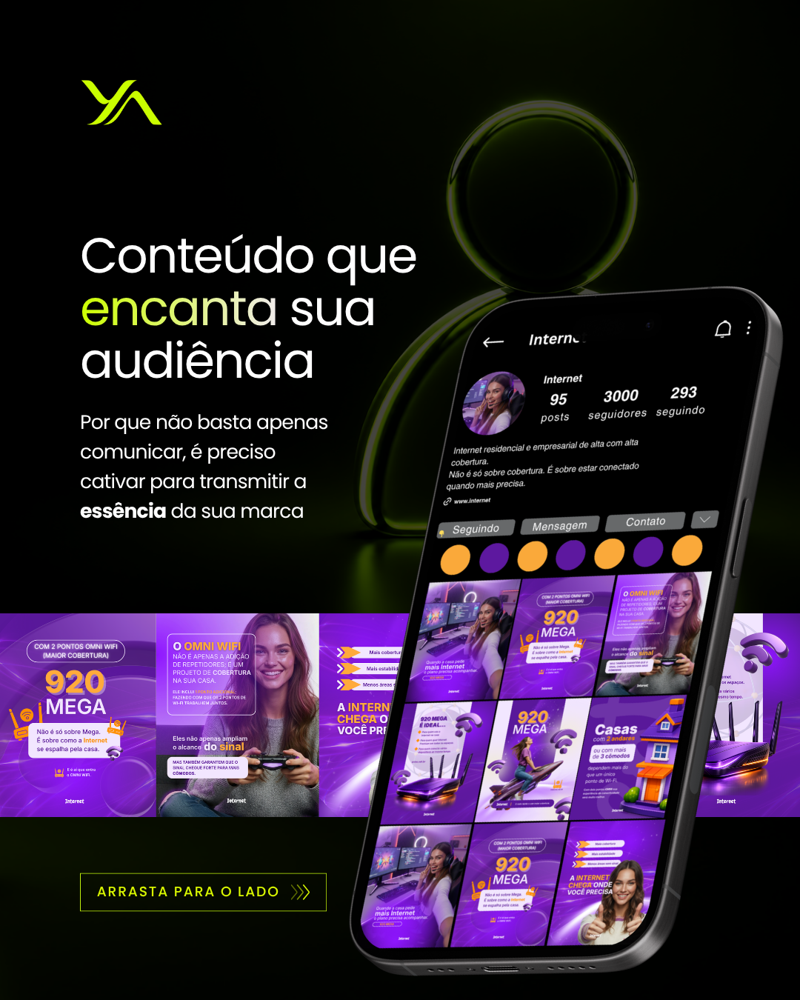
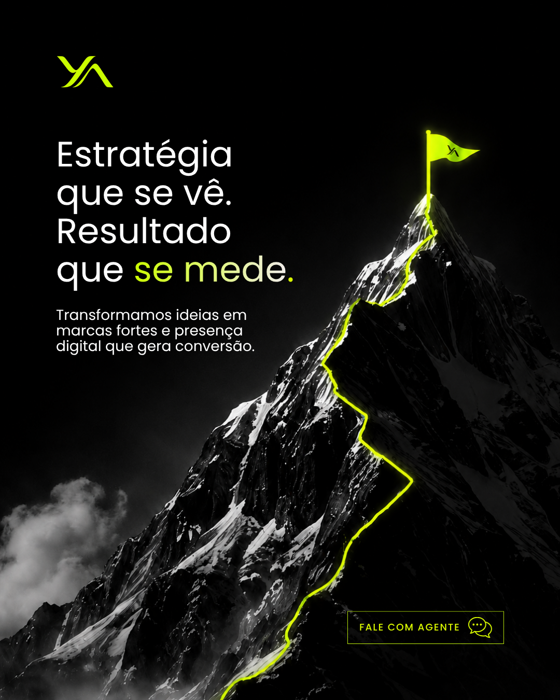

Branding
Construção e refinamento da identidade visual para marcas que precisam nascer com autoridade ou reposicionar sua presença.
Transformamos a forma como marcas são percebidas através de estratégia, criatividade e tecnologia.
A maioria das empresas investe em crescimento. Poucas investem na forma como são percebidas.
Na Ya Design, construímos presença, autoridade e reconhecimento através de estratégia, direção criativa e tecnologia.
Porque o mercado percebe antes de comprar.
Branding, websites, conteúdo, audiovisual, tecnologia e estratégia integrados para fortalecer a forma como sua marca é percebida em cada ponto de contato.
Construção e refinamento da identidade visual para marcas que precisam nascer com autoridade ou reposicionar sua presença.
Peças visuais para conteúdos, campanhas, lançamentos e comunicação recorrente com consistência e acabamento premium.
Materiais de onboarding, apresentações, brindes e peças institucionais para empresas que precisam padronizar sua comunicação.
Convites digitais animados e interativos para eventos, ativações, encontros corporativos e experiências de marca.
Layouts estruturados e atrativos para divulgar ofertas, serviços, ações comerciais e campanhas de relacionamento.
Ajustes técnicos e visuais em marcas, arquivos e aplicações para elevar a qualidade final dos materiais.
Visual pensado para gerar confiança, clareza e autoridade em negociações, apresentações e presença digital.
Adaptação da linguagem gráfica para marcas B2B ou B2C, respeitando público, oferta e contexto de compra.
Uso criterioso de inteligência artificial como apoio criativo, sem abrir mão de direção, refinamento e consistência humana.
Acabamento visual minucioso para que cada entrega tenha padrão premium e possa ser aplicada com segurança.
Uma seleção de peças criadas para campanhas, redes sociais, materiais digitais e experiências visuais de marca.






Estrutura essencial para organizar a presença visual e começar com clareza.
Saber maisPacote para ampliar presença, fortalecer comunicação e criar materiais recorrentes com consistência.
Saber maisProjetos de transformação de percepção para empresas que precisam de uma estrutura completa de posicionamento, presença e autoridade.
Saber maisEstratégia, criatividade e tecnologia trabalhando juntas para fortalecer a forma como sua empresa é percebida ao longo do tempo.
Contrato mínimo de 6 meses
Sim. O projeto Estrutura Base foi pensado para empresas que precisam nascer com autoridade e ter uma presença visual clara desde o início.
Sim. Podemos refinar a identidade, ajustar o tom visual e estruturar assets para redes sociais, materiais comerciais e comunicação institucional.
Sim. Um dos diferenciais da YA é o foco em posicionamento B2B, com comunicação visual pensada para autoridade, confiança e clareza comercial.
Sim. Também atendemos marcas B2C, adaptando a linguagem visual ao público final, ao posicionamento da oferta e aos canais de venda da empresa.
Sim. Avaliamos projetos individuais e demandas pontuais para entender escopo, prazo e melhor formato de entrega antes de iniciar o trabalho.
Vamos entender o momento da sua empresa, identificar pontos de perda de percepção e desenhar um caminho visual mais claro, consistente e estratégico.
Como sua marca é percebida no primeiro contato.
Se seus materiais comunicam
a mesma direção.
Se a presença visual sustenta confiança e decisão.
Identificamos como sua marca aparece nos pontos de contato mais importantes.
Mapeamos ajustes de percepção, consistência e posicionamento visual.
Indicamos o formato de entrega mais adequado para a fase da sua empresa.